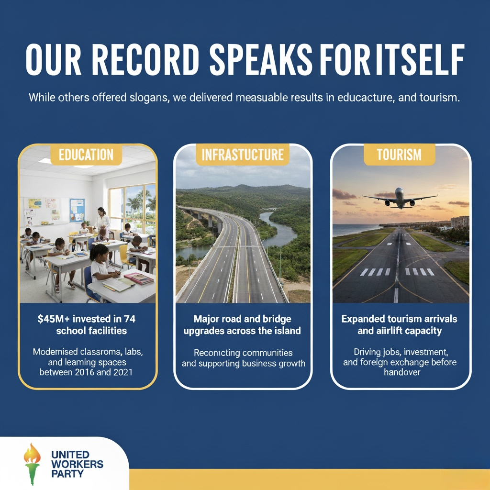
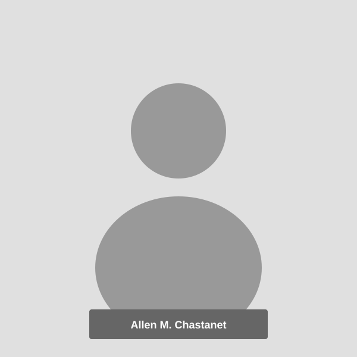

Reclaiming Our Future
The United Workers Party offers a clear, detailed agenda to rebuild trust, restore confidence, and renew hope—giving every citizen the chance to dream again.
Reclaiming Our Future
A transformative agenda built on trust, relief, and people-first development.
United Workers Party Interactive 3D Flipbook BelowManifesto 2025 – Reclaiming Our Future
This comprehensive document outlines our transformative agenda to rebuild trust, restore confidence, and renew hope. It addresses critical areas including security, economic growth, agriculture, tourism, digital economy, caring economy, housing, infrastructure, energy, healthcare, and governance—placing people at the center of development.
Use the arrows to turn pages. For mobile users, you can also download the PDF.
Download PDF (43 MB)6 Key Commitments for Saint Lucia
A clear, focused agenda built on trust, relief, safety, growth, investment, and people-first development.
Trust & Integrity
Rebuild trust and integrity in government.
Relief for Families
Deliver real relief to families through SOS initiatives.
Safer Communities
Secure communities and restore public safety.
A Modern Economy
Grow a diverse, modern economy — agriculture, tourism, digital, creative.
National Investment
Invest in infrastructure, healthcare, and education.
People at the Centre
Put people—especially youth and vulnerable groups—at the centre of development.

Our Record in ActionResults You Could See. Progress You Could Feel.
While others offered slogans, we delivered measurable results in education, infrastructure, and tourism.
$45M+ invested in 74 school facilities
Modernised classrooms, labs, and learning spaces between 2016 and 2021.
Major road and bridge upgrades across the island
Reconnecting communities and supporting business growth.
Expanded tourism arrivals and airlift capacity
Driving jobs, investment, and foreign exchange before handover.
A New Era of Excellence & Opportunity
We envision a globally competitive country where excellence is the standard in public institutions, private enterprise, education, healthcare, and infrastructure. A nation where opportunity is accessible to all, freedoms are protected, and governance is participatory and accountable.
Excellence in Every Sector
Innovation, integrity, and high performance in classrooms, boardrooms, communities, and government.
Equal Access to Opportunity
Doors to education, jobs, entrepreneurship, and leadership open to all, regardless of background or status.
Freedom, Rule of Law & Human Rights
Unwavering commitment to freedoms, the rule of law, and fundamental human rights.
Participatory, People-Powered Governance
A government that listens, learns, and works with its citizens, embedding transparency and accountability.
"We will build a country that stands tall on the world stage because it stands firm on excellence, equality, freedom, and participatory governance."
How We Will Deliver: Relief, Recovery, Reform
Relief empowers people to participate in recovery. Recovery powers reform. Reform locks in progress.
Relief
Immediate Help
- Remove the 2.5% Health & Security Levy to immediately reduce cost-of-living pressure.
- Reduce fuel prices to ease transportation and household expenses.
- Provide free tertiary education at Sir Arthur Lewis Community College.
- Strengthen national security by reintroducing border control operations and expanding the K9 unit.
- Deliver targeted financial support, including pensions and assistance for banana farmers, and expand National Health Insurance coverage.
Recovery
Building for Growth
- Upgrade national infrastructure — roads, bridges, water systems, and connectivity.
- Expand access to quality healthcare and modernise medical services.
- Strengthen education, skills training, and youth opportunities.
- Boost innovation and entrepreneurship across key sectors: agriculture, tourism, construction, digital, creative industries.
- Build a modern caring economy that supports caregivers, families, and vulnerable groups.
Reform
Fixing the System
- Strengthen democratic institutions to ensure independence and accountability.
- Modernise the public service through technology, efficiency, and performance standards.
- Update outdated laws and regulations to align with global best practices.
- Institutionalise citizen participation and improve transparency through open data and public reporting.
- Enforce strong anti-corruption and procurement reforms to build an ethical, efficient, and professional governance culture.
Our Transformative Agenda
Security & Citizen Safety
Tackle crime through institutional reform, technology (CCTV, body cams, digital evidence), community engagement, at-risk youth programmes, and support for protective services.
Read details in the manifesto →Economy & Jobs
Economic growth as the driver of transformation. Youth empowerment, opportunities for vulnerable groups, and inclusive growth for all citizens.
Read details in the manifesto →Agriculture & Fisheries
Modern, climate-smart agriculture. Support for farmers and fishers, land bank initiatives, value addition, and food security.
Read details in the manifesto →Tourism
Product diversification, village tourism, wellness & sports tourism, festival hub vision, and greater local ownership.
Read details in the manifesto →Digital & Creative Economy
Digital infrastructure, digital academy, startup support, IP laws, creative hubs, funding for creatives, festival and cultural promotion.
Read details in the manifesto →Caring Economy
Elevate nurses, caregivers, early childhood educators. Training, standards, overseas opportunities, and care entrepreneurship.
Read details in the manifesto →Housing & Infrastructure
Affordable homes (First Home Saint Lucia, youth mortgages, 5,000 homes target), modern building tech, national road network, new highways, ports, airport, water & waste management.
Read details in the manifesto →Energy, Health & Governance
Renewable energy transition, health sector overhaul (NHI, digital health, infrastructure), good governance, trade, CIP reform, diaspora engagement.
Read details in the manifesto →A New Kind of Leadership
This is a team of educators, entrepreneurs, professionals, community leaders, and advocates—united by integrity and service, not old-style politics.

Allen M. Chastanet
Political Leader, United Workers Party
Team Member
Portfolio
Brief biography to be provided by UWP communications team.
Team Member
Portfolio
Brief biography to be provided by UWP communications team.
Team Member
Portfolio
Brief biography to be provided by UWP communications team.
Team Member
Portfolio
Brief biography to be provided by UWP communications team.
Our Future Is at Stake. Let's Reclaim It Together.
This manifesto is our contract with you—to restore trust, rebuild our institutions, and create a country where every citizen can dream again.